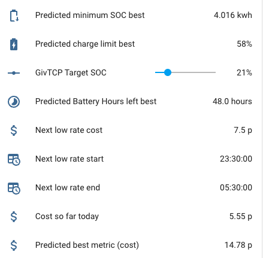

Output data
Displaying output data
Each Predbat config item has an input_number or switch associated with it, you can find an auto-generated dashboard for your configuration in your AppDaemon configuration area under the filename predbat_dashboard.yaml. You will need to open that file in a Home Assistant file editor and copy the contents into a new dashboard page.
You can also create a dashboard page using dynamic-entities-card.yaml for a dynamically created list of all Predbat entities which groups the entities by type and is collapsed by default to prevent screen clutter. Requires lovelace-collapsable-cards (https://github.com/RossMcMillan92/lovelace-collapsable-cards) and lovelace-auto-entities (https://github.com/thomasloven/lovelace-auto-entities) to be installed via HACS as well as the stock vertical stack card. Credit @DJBenson for the code.
The Predbat Plan card is very useful for seeing the plan that Predbat has created - Create the Predbat Plan card.
A set of Apex Charts can also be created to see graphically what Predbat plans to do - Creating the charts.
Basic status
- predbat.status - Gives the current status & errors and logs any changes that Predbat makes to your inverter. The different Predbat status values and their meanings are detailed in what does predbat do.
- switch.predbat_active - When on Predbat is busy calculating or controlling your inverter, when Off its waiting for the next time it needs to make an update. If you toggle this switch in HA it will force Predbat to perform an update now (useful for automations).
Baseline data
What your battery is expected to do with no changes made by Predbat:
- predbat.battery_hours_left - The number of hours left until your home battery is predicted to run out (stops at the maximum prediction time)
- predbat.charge_limit - The current charge limit used for the scenario in %
- predbat.charge_limit_kw - The current charge limit used for the scenario in kwH
- predbat.duration - The duration of the prediction maximum in hours
- predbat.load_energy - Predicted load energy in kWh
- predbat.pv_energy - Predicted PV energy in kWh
- predbat.export_energy - Predicted export energy in kWh
- predbat.import_energy - Predicted import energy in kWh
- predbat.import_energy_battery - Predicted import energy to charge your home battery in kWh
- predbat.import_energy_house - Predicted import energy not provided by your home battery (flat battery or above maximum discharge rate)
- predbat.soc_kw - Predicted state of charge (in kWh) at the end of the prediction, not very useful in itself, but holds all minute by minute prediction data (in attributes) which can be charted with Apex Charts (or similar)
- predbat.soc_min_kwh - The minimum battery level during the time period in kWh
- predbat.metric - Predicted cost metric for the next simulated period (in pence). Also contains data for charting cost in attributes.
- predbat.battery_power - Predicted battery power per minute, for charting
- predbat.battery_cycle - Predicted battery cycle in kWh (total kWh processed)
- predbat.pv_power - Predicted PV power per minute, for charting
- predbat.grid_power - Predicted Grid power per minute, for charting
- predbat.car_soc - Predicted car battery %
PV 10% baseline data
The calculated baseline results under PV 10% scenario:
- predbat.soc_kw_base10 - As soc_kw but using the 10% solar forecast, also holds minute by minute data (in attributes) to be charted
- predbat.base10_pv_energy - Predicted PV 10% energy in kWh
- predbat.base10_metric - Predicted cost for PV 10%
- predbat.base10_export_energy- Predicted export energy for PV 10%
- predbat.base10_load_energy - Predicted load energy for PV 10%
- predbat.base10_import_energy- Predicted import energy for PV 10%
Best
When calculate_best is enabled a second set of entities are created for the simulation based on the best battery charge percentage:
- predbat.best_battery_hours_left - Number of hours left under best plan
- predbat.best_export_energy - Predicted exports under best plan
- predbat_best_import_energy - Predicted imports under best plan
- predbat_best_load - Predicted best load energy
- predbat.best_pv_energy - Predicted Best PV energy in kWh
- predbat_best_import_energy_battery - Predicted imports to the battery under best SOC setting
- predbat_best_import_energy_house - Predicted imports to the house under best SOC setting
- predbat_soc_kw_best - Predicted best final state of charge (in kWh), holds minute by minute prediction data (in attributes) to be charted
- predbat.soc_kw_best_h1 - Single data point for the predicted state of charge in 1 hours time (useful for calibration charts, predicted vs actual)
- predbat.soc_kw_best_h8 - Single data point for the predicted state of charge in 8 hours time (useful for calibration charts, predicted vs actual)
- predbat.soc_kw_best_h12 - Single data point for the predicted state of charge in 12 hours time (useful for calibration charts, predicted vs actual)
- predbat_best_metric - The predicted cost if the proposed SOC % charge target is selected. Also contains data for charting cost in attributes.
- predbat.best_charge_limit - Predicted best battery charge limit in percent
- predbat.best_charge_limit_kw - Predicted best battery charge limit in kwH
- predbat.best_discharge_limit - Predicted best battery discharge limit in percent (will be 0% when discharging or 100% when not)
- predbat.best_discharge_limit_kw - Predicted best battery discharge limit in kwH
- predbat.battery_power_best - Predicted best battery power per minute, for charting
- predbat.battery_cycle_best - Predicted best battery cycle in kWh (total kWh processed)
- predbat.pv_power_best - Predicted best PV power per minute, for charting
- predbat.grid_power - Predicted best Grid power per minute, for charting
- predbat.car_soc_best - Predicated car battery % in best plan
- predbat.iboost_best - Gives the predicted energy going into the iBoost - for charter
- input_number.iboost_today - Gives the amount of energy modelled into the diverter today, resets at 11:30pm each night. Increments in the day.
Best PV 10%
The calculated best results under PV 10% scenario:
- predbat.soc_kw_best10 - As soc_kw_best but using the 10% solar forecast, also holds minute by minute data (in attributes) to be charted
- predbat.best10_pv_energy - Predicted best PV 10% energy in kWh
- predbat.best10_metric - Predicted best cost for PV 10%
- predbat.best10_export_energy- Predicted best export energy for PV 10%
- predbat.best10_load_energy - Predicted best load energy for PV 10%
- predbat.best10_import_energy- Predicted best import energy for PV 10%
Energy rate data
Low import rate entities
- predbat.low_rate_cost - The lowest import rate cost in P
- predbat.low_rate_start - Start time of the next low import rate
- predbat.low_rate_end - End time of the next low import rate
- predbat.low_rate_cost_2, predbat.low_rate_start_2, predbat.low_rate_end_2 - The following low import rate slot
- binary_sensor.predbat_low_rate_slot - A sensor that indicates which there is a low energy rate slot active
High export rate entities
- predbat.high_export_rate_cost - The highest rate cost in P
- predbat.high_export_rate_start - Start time of the next high export rate
- predbat.high_export_rate_end - End time of the next high export rate
- predbat.high_export_rate_cost_2, predbat.high_export_rate_start_2, predbat.high_export_rate_end_2 - The following high export rate slot
- binary_sensor.predbat_high_export_rate_slot - A sensor that indicates which there is a high export rate slot active
Other rate entities
- predbat.rates - The current energy rates in P (also can be charted)
- predbat.rates_export - The current energy export rates in P (also be be charted)
- predbat.cost_today - The total cost of energy so far today (since midnight)
- predbat.car_soc - The expected charge level of your car at the end of the simulation. Can also be charted.
- predbat.car_soc_best - The expected charge level of your car at the end of the simulation using the proposed SOC%/Window. Can also be charted.
Car data
- binary_sensor.predbat_car_charging_slot - A binary sensor suggesting when to charge your car (if the car planning is enabled)
Sample Predbat data out dashboard

Predbat Logfile
Predbat writes detailed logging, status and progress activity information to a logfile as it runs and so this file should be checked if predbat.status reports an error, or if you want to verify that Predbat is running OK.
There is a lot of output in the logfile, this is normal!
Depending upon whether you have used the combined AppDaemon/Predbat add-on installation method or the HACS, Appdaemon add-on then Predbat installation method, the logfile will be held in one of two directories in Home Assistant:
/addon_configs/46f69597_appdaemon-predbat/predbat.logif you used the combined AppDaemon/Predbat add-on installation method
or
/homeassistant/appdaemon/appdaemon.logif you used the HACS, AppDaemon add-on then Predbat installation method
You will need to use a file editor within Home Assistant (e.g. either the File editor or Studio Code Server add-on's) to view Predbat's logfile - see editing configuration files within Home Assistant if you need to install an editor.
Automated monitoring that Predbat and GivTCP are running OK
With GivTCP and Predbat performing an important function, managing your battery charging and discharging to best reduce your electricity bills, you may find these automations useful to monitor that GivTCP and Predbat are running OK, and if not, to raise an alert on your mobile device.
GivTCP activity monitor
This automation will raise an alert if any of the following occur:
- The inverter goes offline for more than 30 minutes
- No last_updated_time received from the inverter for more than 30 minutes
- Inverter temperature less than 5 degrees for more than 30 minutes (should never happen)
- The battery goes offline to the inverter for more than 30 minutes
The script will need to be customised for your inverter id, battery id and mobile details, and can be extended for multiple inverters and batteries.
alias: GivTCP activity monitor
description: Alert when communications to GivTCP have ceased for 30 minutes
trigger:
- platform: state
entity_id: sensor.givtcp_<inverter id>_last_updated_time
to: "null"
for:
minutes: 30
id: no-givtcp-update
variables:
inv_id: inverter <id>
- platform: state
entity_id:
- sensor.givtcp_<inverter id>_status
from: "online"
for:
minutes: 30
id: no-givtcp-update
variables:
inv_id: inverter <id>
- platform: numeric_state
entity_id:
- sensor.givtcp_<inverter id>_invertor_temperature
for:
minutes: 30
below: 5
id: no-givtcp-update
variables:
inv_id: inverter <id>
- platform: state
entity_id:
- sensor.givtcp_<battery id>_battery_cells
to: "unknown"
for:
minutes: 30
id: battery-unavailable
variables:
batt_id: <batt size/id>
action:
- choose:
- conditions:
- condition: trigger
id:
- no-givtcp-update
sequence:
- service: notify.mobile_app_<your mobile device id>
data:
title: GivTCP communication issue
message: |
{{ now().timestamp() | timestamp_custom('%-d %b %H:%M') }} ISSUE:
No GivTCP update received from {{ inv_id }} for the past 30 minutes.
data:
visibility: public
persistent: true
push:
sound:
name: default
critical: 1
volume: 0.8
sticky: true
color: red
- conditions:
- condition: trigger
id:
- battery-unavailable
sequence:
- service: notify.mobile_app_<your mobile device id>
data:
title: GivTCP communication issue
message: |
{{ now().timestamp() | timestamp_custom('%-d %b %H:%M') }} ISSUE:
Battery {{ batt_id }} offline to GivTCP for the past 30 minutes.
data:
visibility: public
persistent: true
push:
sound:
name: default
critical: 1
volume: 0.8
sticky: true
color: red
mode: single
As an extension to the above, instead of just alerting that GivTCP has a problem, the automation could also restart GivTCP add-on which usually cures most GivTCP connectivity issues. Restarting GivTCP does however lose the current GivTCP log in Home Assistant.
To restart the GivTCP add-on, add the following at the end of each 'sequence' sub-section within the action section:
- service: hassio.addon_restart
data:
addon: a6a2857d_givtcp
Predbat error monitor
This automation will raise an alert if Predbat's status turns to ERROR for more than 10 minutes.
The script will need to be customised for your mobile details.
alias: predbat error monitor
description: Alert when Predbat has raised an exception
trigger:
- platform: state
entity_id:
- predbat.status
to: "ERROR: Exception raised"
for:
minutes: 10
- platform: template
value_template: "{{ 'ERROR' in states('predbat.status') }}"
for:
minutes: 10
action:
- service: notify.mobile_app_<your mobile device id>
data:
title: Predbat status issue
message: |
{{ now().timestamp() | timestamp_custom('%-d %b %H:%M') }} ISSUE:
predbat status is {{ states('predbat.status') }}
data:
visibility: public
persistent: true
push:
sound:
name: default
critical: 1
volume: 0.8
sticky: true
color: red
mode: single
An error alert looks like this: